rdev includes functions to change the style of ggplot2 plots. The included theme, quo, can be added to individual plots using theme_quo(). viridis_quo() sets the default theme to theme_quo() and the default color palettes to viridis, and can be invoked automatically in .Rprofile.
Quo Theme
The quo theme applied to the venerable mtcars dataset. Example adapted from ggplot2::theme_minimal():
p1 <- ggplot(mtcars, aes(x = wt, y = mpg, color = factor(cyl))) +
geom_point() +
labs(
title = "Fuel economy declines as weight increases",
subtitle = "(1973-74)",
caption = "Data from the 1974 Motor Trend US magazine.",
tag = "Figure 1",
x = "Weight (1000 lbs)",
y = "Fuel economy (mpg)",
color = "Gears"
)
p1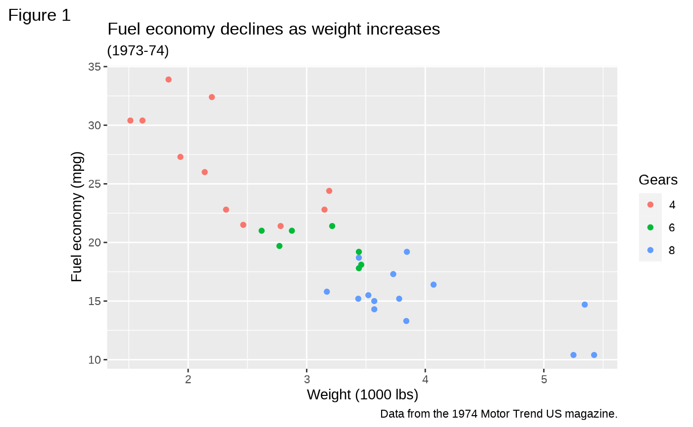
p1 + theme_quo()
The viridis color scheme can be added manually using ggplot2::scale_color_viridis_d():
p1 +
theme_quo() +
scale_color_viridis_d()
Viridis Quo
Invoking viridis_quo() will change the style of all plots. Examples adapted from ggplot2::scale_colour_viridis_d:
Sample plots using the default theme and color scales.
txsamp <- subset(txhousing, city %in% c("Houston", "Fort Worth", "San Antonio", "Dallas", "Austin"))
(d <- ggplot(data = txsamp, aes(x = sales, y = median)) +
geom_point(aes(colour = city)))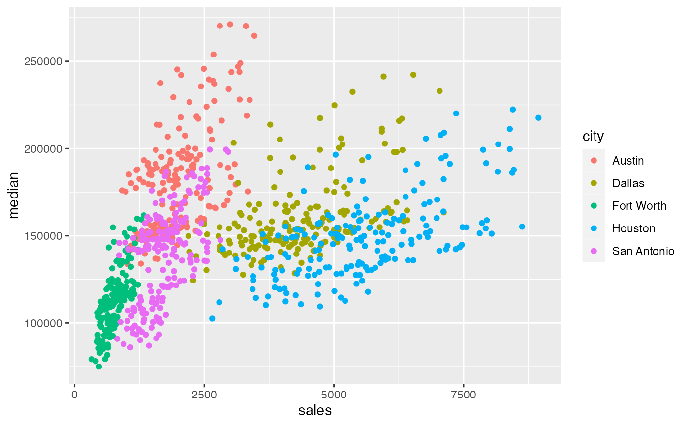
(p <- ggplot(txsamp, aes(x = median, fill = city)) +
geom_histogram(position = "dodge", binwidth = 15000))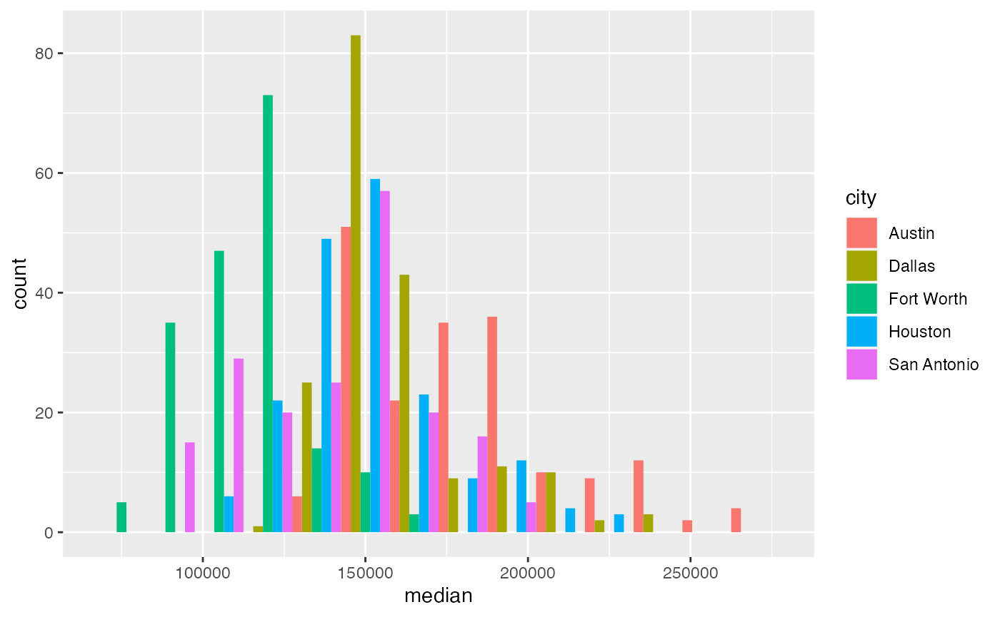

The same plots after running viridis_quo():
viridis_quo()
d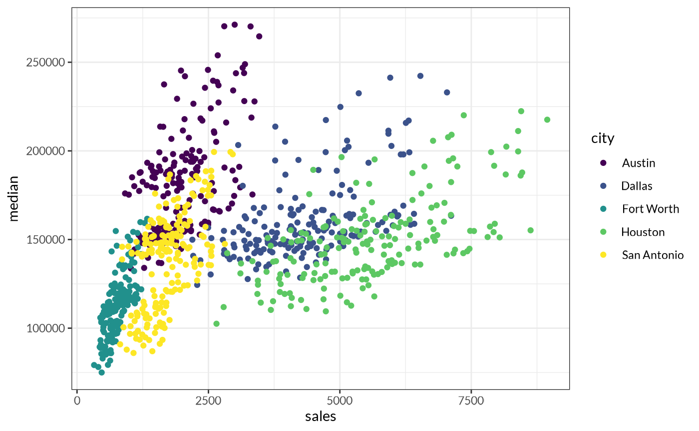
p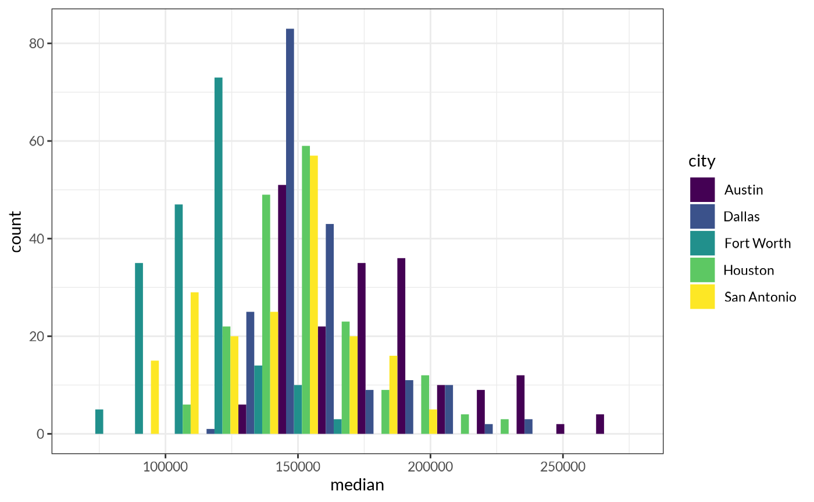
v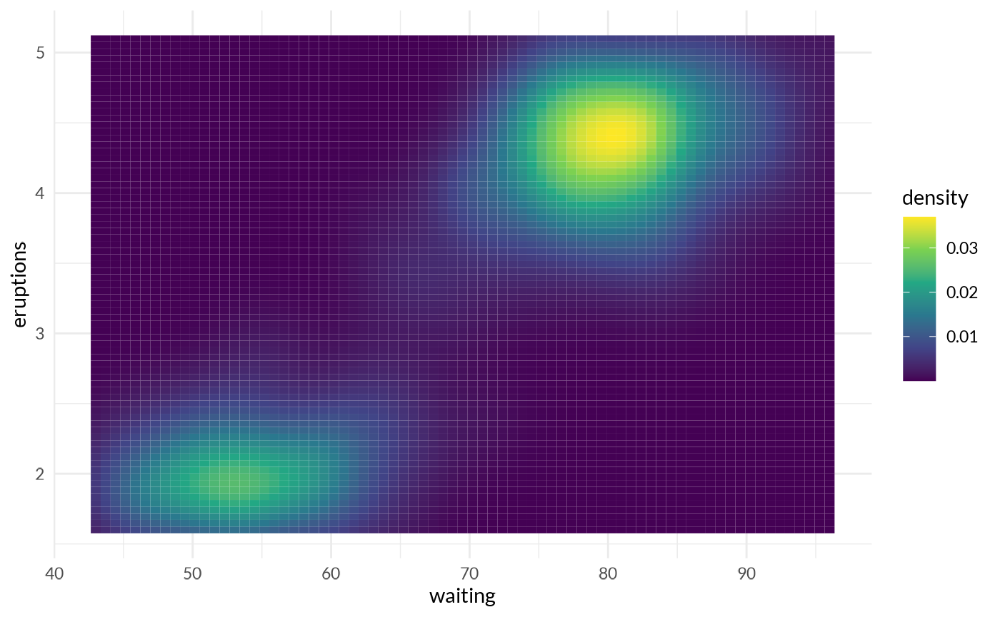
Gridlines
Gridlines can be selectively disabled using theme_quo():
d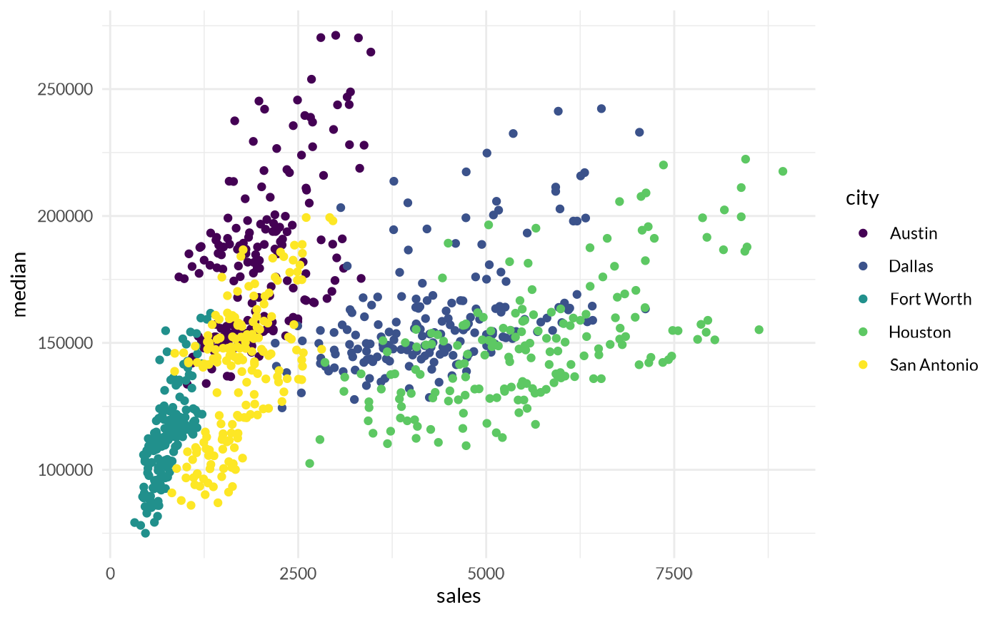
p + theme_quo(major.x = FALSE, minor.x = FALSE)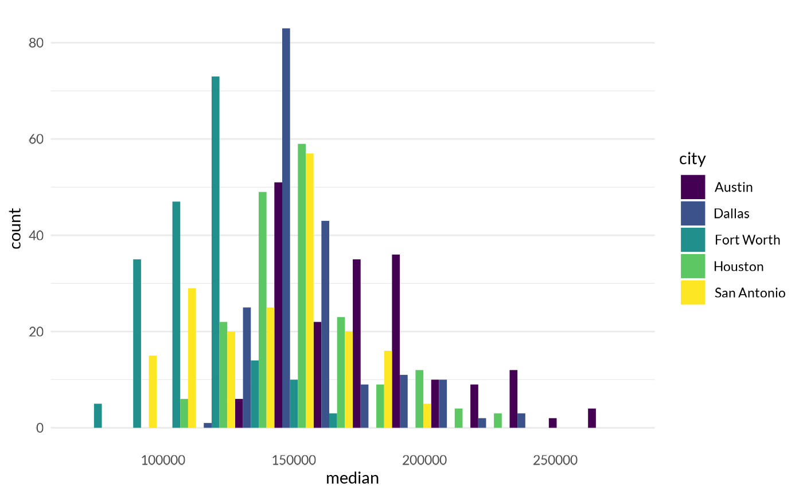
v + theme_quo(major = FALSE, minor = FALSE)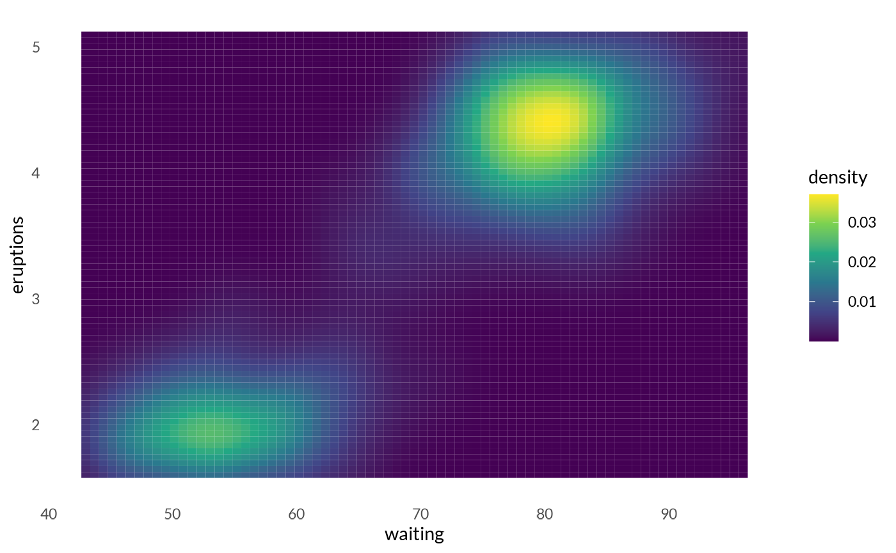